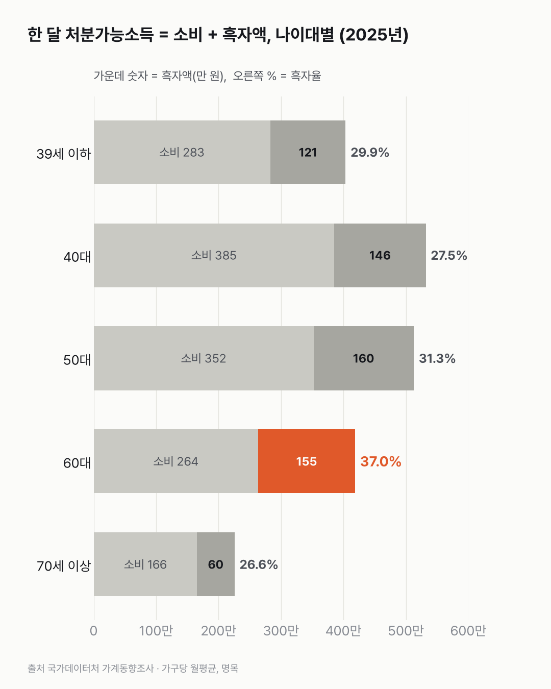
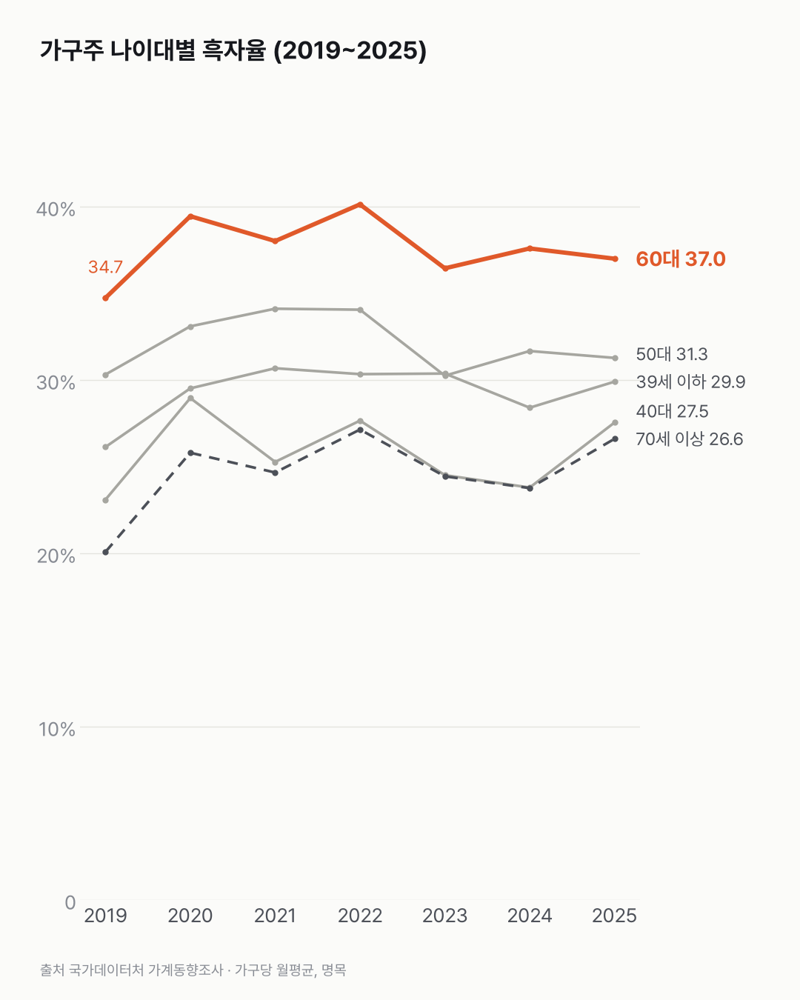

쓰고 남는 돈, 비율로는 60대 집이 가장 커요
남는 비율은 60대 가구가, 남는 금액은 50대 가구가 가장 커요. 비율도 금액도 가장 작은 건 70세 이상이었어요.

- 2025년 소득에서 쓰고 남는 비율(흑자율)은 60대 가구가 37.0%로 가장 높아요. 39세 이하는 29.9%, 40대는 27.5%예요.
- 남는 금액은 50대 가구가 한 달 160.3만 원, 60대가 154.9만 원으로 가장 많아요.
- 60대는 2019~2025년 내내 이 비율이 가장 높았고, 39세 이하는 26.1%에서 29.9%로 올랐어요.
40대 가구와 39세 이하 가구를 나란히 놓아 봤어요. 처음엔 반대일 줄 알았어요. 소득에서 남기는 비율은 40대가 더 낮았거든요. 2025년 40대는 27.5%, 39세 이하는 29.9%예요.
둘 다 올라온 값이에요. 2019년엔 39세 이하가 26.1%, 40대가 23.1%였어요. 2020년엔 모든 나이대의 흑자율이 2019년보다 올랐어요.
가장 높은 건 60대예요. 2025년 37.0%로, 2019년부터 한 해도 빠짐없이 1위였어요. 50대 31.3%, 70세 이상 26.6%이고 전체는 30.9%예요.
금액으로 보면 순서가 바뀌어요. 한 달 흑자액은 50대가 160.3만 원, 60대가 154.9만 원이고, 39세 이하는 120.7만 원, 70세 이상은 60.0만 원이에요.
가장 최근인 2026년 2분기엔 39세 이하 25.3%, 60대 39.1%, 전체 30.8%예요.

남는 돈엔 빚 갚는 돈도 들어가요. 39세 이하 가구가 남긴 돈 중 얼마가 저축으로 가고 얼마가 대출 상환으로 가는지는 이 표로 셀 수 없었어요.
이 숫자는 어디서 왔나요
출처
기준일 2019~2025년(한 해 평균)이고, 가장 최근 분기는 2026년 2분기예요.
국가데이터처가계동향조사
- 가구주 연령별 가구당 월평균 가계수지KOSIS DT_1L9U108원본 보기
전국 1인 이상 가구, 분기 2019.1~2026.2 → 연 평균
어떻게 셌나요
- 흑자액은 처분가능소득(세금·사회보험료 등을 뺀 소득)에서 소비지출을 뺀 돈이에요. 저축뿐 아니라 빚 갚기·투자 등에 쓸 수 있는 돈이라 '저축률'이라고 쓰지 않았어요.
- 흑자율은 흑자액을 처분가능소득으로 나눈 값이에요.
- 이 표의 연간 값엔 소득 항목이 없어서, 분기 값 4개를 평균해 한 해 값을 만들었어요.
- 2019년 조사 개편 뒤 표만 썼어요. 물가를 반영하지 않은 명목 금액이에요. 나이대마다 가구원 수가 달라요(39세 이하엔 1인 가구가 많아요).
한계 4가지
이 데이터로 말할 수 없는 것
- 흑자는 저축과 달라요. 빚 갚기에 쓰는 돈도 흑자에 들어가요.
- 가구 단위라 가구원 수가 다른 나이대끼리 금액을 바로 비교하기 어려워요. 그래서 비율(흑자율)을 주로 봤어요.
- 자산·부채는 이 표에 없어요. 가구 부채 변화는 가계 소득·부채 변화 글에서 다뤘어요.
- 원인과 투자 판단은 다루지 않아요.
새 글 나오면 받아 보기
피드 리더 앱에 이 사이트 주소를 한 번 넣어 두면, 새 글이 올라올 때 앱에 떠요. 가입이나 메일 주소는 필요 없어요.
받는 법 보기
- 피드 리더 앱을 하나 골라요. 새 글을 모아 보여 주는 앱이에요. 예를 들면 Feedly나 Inoreader가 있어요. 둘 다 무료고 웹·휴대폰에서 써요.
- 앱에서 '구독 추가'(+)를 누르고 아래 주소를 붙여 넣어요.
- 끝이에요. 새 글이 올라오면 앱 목록에 떠요.
https://protofu.github.io/opendata-insight/feed.xmlFeedly를 쓴다면 여기를 눌러 바로 추가할 수도 있어요.